- Generated by
 1.13.2
1.13.2
|
fitpack
Modern Fortran library for curve and surface fitting with splines
|
C interface to module fitpack_parametric_curves. More...
Data Types | |
| interface | f_associated |
Pointer-identity check. Returns true iff a and b view the same underlying Fortran object (their internal c_ptrs match and are non-null). Useful for C-API consumers that want object identity without exposing raw pointers — e.g. GUI panels checking whether an input view points at the same Fortran allocation as the project that owns it. More... | |
| interface | f_pointer |
Functions/Subroutines | |
| logical(c_bool) function, public | fitpack_parametric_curve_c_is_same (this, that) |
| Pointer-identity check: true iff both wrappers point to the same underlying Fortran object (and that object is allocated). | |
| type(fitpack_parametric_curve) function, pointer | fitpack_parametric_curve_c_get_pointer (this) |
| logical function | fitpack_parametric_curve_c_pointer (this, fthis) |
| subroutine, public | fitpack_parametric_curve_c_allocate (this, status) |
| subroutine, public | fitpack_parametric_curve_c_destroy (this, status) |
| subroutine, public | fitpack_parametric_curve_c_copy (this, that, deep_copy, status) |
| subroutine, public | fitpack_parametric_curve_c_associate (this, that, status) |
| subroutine, public | fitpack_parametric_curve_c_move_alloc (to, from, status) |
| subroutine, public | fitpack_parametric_curve_c_set_default_parameters (this) |
| integer(c_int32_t) function, public | fitpack_parametric_curve_c_fit (this, smoothing, order, keep_knots) |
| integer(c_int32_t) function, public | fitpack_parametric_curve_c_interpolate (this, order, reset_knots) |
| integer(c_int32_t) function, public | fitpack_parametric_curve_c_least_squares (this, smoothing, reset_knots) |
| integer(c_int32_t) function, public | fitpack_parametric_curve_c_comm_size (this) |
| real(c_double) function, public | fitpack_parametric_curve_c_mse (this) |
| integer(c_int32_t) function, public | fitpack_parametric_curve_c_core_comm_size (this) |
| subroutine, public | fitpack_parametric_curve_c_destroy_base (this) |
| subroutine, public | fitpack_parametric_curve_c_new_points (this, x_n1, x_n2, x, u, w) |
| integer(c_int32_t) function, public | fitpack_parametric_curve_c_new_fit (this, x_n1, x_n2, x, u, w, smoothing, order) |
| subroutine, public | fitpack_parametric_curve_c_eval_one (this, u, ierr, result, n_result) |
| subroutine, public | fitpack_parametric_curve_c_eval_many (this, n, u, ierr, result, n_result) |
| subroutine, public | fitpack_parametric_curve_c_curve_derivative (this, u, order, ierr, result, n_result) |
| subroutine, public | fitpack_parametric_curve_c_curve_derivatives (this, n, u, order, ierr, result, n_result) |
| subroutine, public | fitpack_parametric_curve_c_curve_all_derivatives (this, u, ierr, result, n_result) |
| subroutine, public | fitpack_parametric_curve_c_comm_pack (this, n, buffer) |
| subroutine, public | fitpack_parametric_curve_c_comm_expand (this, n, buffer) |
| subroutine, public | fitpack_parametric_curve_c_core_comm_pack (this, n, buffer) |
| subroutine, public | fitpack_parametric_curve_c_core_comm_expand (this, n, buffer) |
| subroutine, public | fitpack_parametric_curve_c_getcomp_x (this, ptr, extents) |
Raw view of component 'x': address of the first element, plus the component's 2 extent(s). Null pointer and zero extents when the object or the component is unallocated; an allocated but zero-sized component still reports its true shape, but has no representable address. Symbol uses the getcomp_ infix (not get_) so it can never collide with a type-bound procedure named get_<component>. | |
| subroutine, public | fitpack_parametric_curve_c_getcomp_u (this, ptr, extents) |
Raw view of component 'u': address of the first element, plus the component's 1 extent(s). Null pointer and zero extents when the object or the component is unallocated; an allocated but zero-sized component still reports its true shape, but has no representable address. Symbol uses the getcomp_ infix (not get_) so it can never collide with a type-bound procedure named get_<component>. | |
| subroutine, public | fitpack_parametric_curve_c_getcomp_sp (this, ptr, extents) |
Raw view of component 'sp': address of the first element, plus the component's 1 extent(s). Null pointer and zero extents when the object or the component is unallocated; an allocated but zero-sized component still reports its true shape, but has no representable address. Symbol uses the getcomp_ infix (not get_) so it can never collide with a type-bound procedure named get_<component>. | |
| subroutine, public | fitpack_parametric_curve_c_getcomp_w (this, ptr, extents) |
Raw view of component 'w': address of the first element, plus the component's 1 extent(s). Null pointer and zero extents when the object or the component is unallocated; an allocated but zero-sized component still reports its true shape, but has no representable address. Symbol uses the getcomp_ infix (not get_) so it can never collide with a type-bound procedure named get_<component>. | |
| subroutine, public | fitpack_parametric_curve_c_getcomp_dd (this, ptr, extents) |
Raw view of component 'dd': address of the first element, plus the component's 2 extent(s). Null pointer and zero extents when the object or the component is unallocated; an allocated but zero-sized component still reports its true shape, but has no representable address. Symbol uses the getcomp_ infix (not get_) so it can never collide with a type-bound procedure named get_<component>. | |
| subroutine, public | fitpack_parametric_curve_c_getcomp_t (this, ptr, extents) |
Raw view of component 't': address of the first element, plus the component's 1 extent(s). Null pointer and zero extents when the object or the component is unallocated; an allocated but zero-sized component still reports its true shape, but has no representable address. Symbol uses the getcomp_ infix (not get_) so it can never collide with a type-bound procedure named get_<component>. | |
| type(c_ptr) function, public | fitpack_parametric_curve_c_ref_m (this) |
| Get pointer to scalar property 'm'. | |
| type(c_ptr) function, public | fitpack_parametric_curve_c_ref_idim (this) |
| Get pointer to scalar property 'idim'. | |
| logical(c_bool) function, public | fitpack_parametric_curve_c_get_has_params (this) |
| Get logical property 'has_params'. | |
| subroutine, public | fitpack_parametric_curve_c_set_has_params (this, value) |
| Set logical property 'has_params'. | |
| type(c_ptr) function, public | fitpack_parametric_curve_c_ref_order (this) |
| Get pointer to scalar property 'order'. | |
| type(c_ptr) function, public | fitpack_parametric_curve_c_ref_ubegin (this) |
| Get pointer to scalar property 'ubegin'. | |
| type(c_ptr) function, public | fitpack_parametric_curve_c_ref_uend (this) |
| Get pointer to scalar property 'uend'. | |
| type(c_ptr) function, public | fitpack_parametric_curve_c_ref_nest (this) |
| Get pointer to scalar property 'nest'. | |
| type(c_ptr) function, public | fitpack_parametric_curve_c_ref_knots (this) |
| Get pointer to scalar property 'knots'. | |
| logical(c_bool) function, public | fitpack_closed_curve_c_is_same (this, that) |
| Pointer-identity check: true iff both wrappers point to the same underlying Fortran object (and that object is allocated). | |
| type(fitpack_closed_curve) function, pointer | fitpack_closed_curve_c_get_pointer (this) |
| logical function | fitpack_closed_curve_c_pointer (this, fthis) |
| subroutine, public | fitpack_closed_curve_c_allocate (this, status) |
| subroutine, public | fitpack_closed_curve_c_destroy (this, status) |
| subroutine, public | fitpack_closed_curve_c_copy (this, that, deep_copy, status) |
| subroutine, public | fitpack_closed_curve_c_associate (this, that, status) |
| subroutine, public | fitpack_closed_curve_c_move_alloc (to, from, status) |
| subroutine, public | fitpack_closed_curve_c_set_default_parameters (this) |
| integer(c_int32_t) function, public | fitpack_closed_curve_c_fit (this, smoothing, order, keep_knots) |
| integer(c_int32_t) function, public | fitpack_closed_curve_c_interpolate (this, order, reset_knots) |
| integer(c_int32_t) function, public | fitpack_closed_curve_c_least_squares (this, smoothing, reset_knots) |
| integer(c_int32_t) function, public | fitpack_closed_curve_c_comm_size (this) |
| real(c_double) function, public | fitpack_closed_curve_c_mse (this) |
| integer(c_int32_t) function, public | fitpack_closed_curve_c_core_comm_size (this) |
| subroutine, public | fitpack_closed_curve_c_destroy_base (this) |
| subroutine, public | fitpack_closed_curve_c_new_points (this, x_n1, x_n2, x, u, w) |
| integer(c_int32_t) function, public | fitpack_closed_curve_c_new_fit (this, x_n1, x_n2, x, u, w, smoothing, order) |
| subroutine, public | fitpack_closed_curve_c_eval_one (this, u, ierr, result, n_result) |
| subroutine, public | fitpack_closed_curve_c_eval_many (this, n, u, ierr, result, n_result) |
| subroutine, public | fitpack_closed_curve_c_curve_derivative (this, u, order, ierr, result, n_result) |
| subroutine, public | fitpack_closed_curve_c_curve_derivatives (this, n, u, order, ierr, result, n_result) |
| subroutine, public | fitpack_closed_curve_c_curve_all_derivatives (this, u, ierr, result, n_result) |
| subroutine, public | fitpack_closed_curve_c_comm_pack (this, n, buffer) |
| subroutine, public | fitpack_closed_curve_c_comm_expand (this, n, buffer) |
| subroutine, public | fitpack_closed_curve_c_core_comm_pack (this, n, buffer) |
| subroutine, public | fitpack_closed_curve_c_core_comm_expand (this, n, buffer) |
| logical(c_bool) function, public | fitpack_constrained_curve_c_is_same (this, that) |
| Pointer-identity check: true iff both wrappers point to the same underlying Fortran object (and that object is allocated). | |
| type(fitpack_constrained_curve) function, pointer | fitpack_constrained_curve_c_get_pointer (this) |
| logical function | fitpack_constrained_curve_c_pointer (this, fthis) |
| subroutine, public | fitpack_constrained_curve_c_allocate (this, status) |
| subroutine, public | fitpack_constrained_curve_c_destroy (this, status) |
| subroutine, public | fitpack_constrained_curve_c_copy (this, that, deep_copy, status) |
| subroutine, public | fitpack_constrained_curve_c_associate (this, that, status) |
| subroutine, public | fitpack_constrained_curve_c_move_alloc (to, from, status) |
| subroutine, public | fitpack_constrained_curve_c_clean_constraints (this) |
| integer(c_int32_t) function, public | fitpack_constrained_curve_c_comm_size (this) |
| subroutine, public | fitpack_constrained_curve_c_set_default_parameters (this) |
| integer(c_int32_t) function, public | fitpack_constrained_curve_c_fit (this, smoothing, order, keep_knots) |
| integer(c_int32_t) function, public | fitpack_constrained_curve_c_interpolate (this, order, reset_knots) |
| integer(c_int32_t) function, public | fitpack_constrained_curve_c_least_squares (this, smoothing, reset_knots) |
| real(c_double) function, public | fitpack_constrained_curve_c_mse (this) |
| integer(c_int32_t) function, public | fitpack_constrained_curve_c_core_comm_size (this) |
| subroutine, public | fitpack_constrained_curve_c_destroy_base (this) |
| subroutine, public | fitpack_constrained_curve_c_set_constraints (this, ddx_begin_n1, ddx_begin_n2, ddx_begin, ddx_end_n1, ddx_end_n2, ddx_end, ierr) |
| subroutine, public | fitpack_constrained_curve_c_comm_pack (this, n, buffer) |
| subroutine, public | fitpack_constrained_curve_c_comm_expand (this, n, buffer) |
| subroutine, public | fitpack_constrained_curve_c_new_points (this, x_n1, x_n2, x, u, w) |
| integer(c_int32_t) function, public | fitpack_constrained_curve_c_new_fit (this, x_n1, x_n2, x, u, w, smoothing, order) |
| subroutine, public | fitpack_constrained_curve_c_eval_one (this, u, ierr, result, n_result) |
| subroutine, public | fitpack_constrained_curve_c_eval_many (this, n, u, ierr, result, n_result) |
| subroutine, public | fitpack_constrained_curve_c_curve_derivative (this, u, order, ierr, result, n_result) |
| subroutine, public | fitpack_constrained_curve_c_curve_derivatives (this, n, u, order, ierr, result, n_result) |
| subroutine, public | fitpack_constrained_curve_c_curve_all_derivatives (this, u, ierr, result, n_result) |
| subroutine, public | fitpack_constrained_curve_c_core_comm_pack (this, n, buffer) |
| subroutine, public | fitpack_constrained_curve_c_core_comm_expand (this, n, buffer) |
| subroutine, public | fitpack_constrained_curve_c_getcomp_deriv_begin (this, ptr, extents) |
Raw view of component 'deriv_begin': address of the first element, plus the component's 2 extent(s). Null pointer and zero extents when the object or the component is unallocated; an allocated but zero-sized component still reports its true shape, but has no representable address. Symbol uses the getcomp_ infix (not get_) so it can never collide with a type-bound procedure named get_<component>. | |
| subroutine, public | fitpack_constrained_curve_c_getcomp_deriv_end (this, ptr, extents) |
Raw view of component 'deriv_end': address of the first element, plus the component's 2 extent(s). Null pointer and zero extents when the object or the component is unallocated; an allocated but zero-sized component still reports its true shape, but has no representable address. Symbol uses the getcomp_ infix (not get_) so it can never collide with a type-bound procedure named get_<component>. | |
| subroutine, public | fitpack_constrained_curve_c_getcomp_xx (this, ptr, extents) |
Raw view of component 'xx': address of the first element, plus the component's 2 extent(s). Null pointer and zero extents when the object or the component is unallocated; an allocated but zero-sized component still reports its true shape, but has no representable address. Symbol uses the getcomp_ infix (not get_) so it can never collide with a type-bound procedure named get_<component>. | |
| subroutine, public | fitpack_constrained_curve_c_getcomp_cp (this, ptr, extents) |
Raw view of component 'cp': address of the first element, plus the component's 2 extent(s). Null pointer and zero extents when the object or the component is unallocated; an allocated but zero-sized component still reports its true shape, but has no representable address. Symbol uses the getcomp_ infix (not get_) so it can never collide with a type-bound procedure named get_<component>. | |
| type(c_ptr) function, public | fitpack_constrained_curve_c_ref_ib (this) |
| Get pointer to scalar property 'ib'. | |
| type(c_ptr) function, public | fitpack_constrained_curve_c_ref_ie (this) |
| Get pointer to scalar property 'ie'. | |
C interface to module fitpack_parametric_curves.
| subroutine, public fitpack_parametric_curves_c::fitpack_closed_curve_c_allocate | ( | type(fitpack_closed_curve_c), intent(inout) | this, |
| type(fx_status), intent(out), optional | status ) |
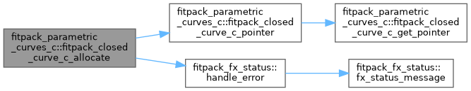
| subroutine, public fitpack_parametric_curves_c::fitpack_closed_curve_c_associate | ( | type(fitpack_closed_curve_c), intent(inout) | this, |
| type(fitpack_closed_curve_c), intent(in) | that, | ||
| type(fx_status), intent(out), optional | status ) |
| subroutine, public fitpack_parametric_curves_c::fitpack_closed_curve_c_comm_expand | ( | type(fitpack_closed_curve_c), intent(inout) | this, |
| integer(c_int32_t), intent(in), value | n, | ||
| real(c_double), dimension(n), intent(in) | buffer ) |
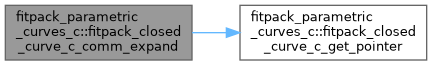
| subroutine, public fitpack_parametric_curves_c::fitpack_closed_curve_c_comm_pack | ( | type(fitpack_closed_curve_c), intent(inout) | this, |
| integer(c_int32_t), intent(in), value | n, | ||
| real(c_double), dimension(n), intent(inout) | buffer ) |
| integer(c_int32_t) function, public fitpack_parametric_curves_c::fitpack_closed_curve_c_comm_size | ( | type(fitpack_closed_curve_c), intent(in) | this | ) |
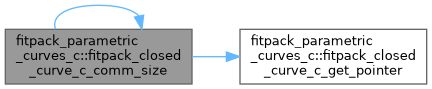
| subroutine, public fitpack_parametric_curves_c::fitpack_closed_curve_c_copy | ( | type(fitpack_closed_curve_c), intent(inout) | this, |
| type(fitpack_closed_curve_c), intent(in) | that, | ||
| logical(c_bool), intent(in), value | deep_copy, | ||
| type(fx_status), intent(out), optional | status ) |
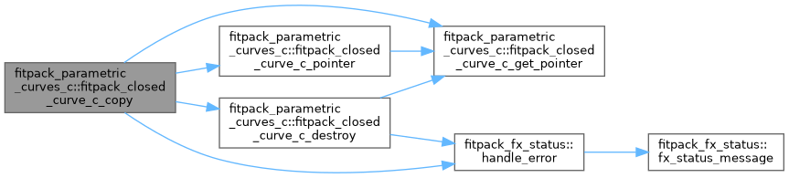
| subroutine, public fitpack_parametric_curves_c::fitpack_closed_curve_c_core_comm_expand | ( | type(fitpack_closed_curve_c), intent(inout) | this, |
| integer(c_int32_t), intent(in), value | n, | ||
| real(c_double), dimension(n), intent(in) | buffer ) |
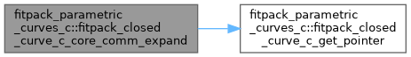
| subroutine, public fitpack_parametric_curves_c::fitpack_closed_curve_c_core_comm_pack | ( | type(fitpack_closed_curve_c), intent(inout) | this, |
| integer(c_int32_t), intent(in), value | n, | ||
| real(c_double), dimension(n), intent(inout) | buffer ) |
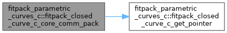
| integer(c_int32_t) function, public fitpack_parametric_curves_c::fitpack_closed_curve_c_core_comm_size | ( | type(fitpack_closed_curve_c), intent(in) | this | ) |
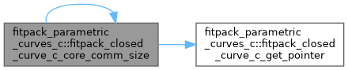
| subroutine, public fitpack_parametric_curves_c::fitpack_closed_curve_c_curve_all_derivatives | ( | type(fitpack_closed_curve_c), intent(inout) | this, |
| real(c_double), intent(in), value | u, | ||
| integer(c_int32_t), intent(out), optional | ierr, | ||
| real(c_double), dimension(*), intent(inout) | result, | ||
| integer(c_int32_t), intent(in), value | n_result ) |
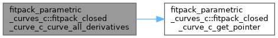
| subroutine, public fitpack_parametric_curves_c::fitpack_closed_curve_c_curve_derivative | ( | type(fitpack_closed_curve_c), intent(inout) | this, |
| real(c_double), intent(in), value | u, | ||
| integer(c_int32_t), intent(in), value | order, | ||
| integer(c_int32_t), intent(out), optional | ierr, | ||
| real(c_double), dimension(*), intent(inout) | result, | ||
| integer(c_int32_t), intent(in), value | n_result ) |
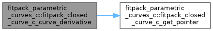
| subroutine, public fitpack_parametric_curves_c::fitpack_closed_curve_c_curve_derivatives | ( | type(fitpack_closed_curve_c), intent(inout) | this, |
| integer(c_int32_t), intent(in), value | n, | ||
| real(c_double), dimension(n), intent(in) | u, | ||
| integer(c_int32_t), intent(in), value | order, | ||
| integer(c_int32_t), intent(out), optional | ierr, | ||
| real(c_double), dimension(*), intent(inout) | result, | ||
| integer(c_int32_t), intent(in), value | n_result ) |
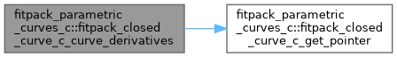
| subroutine, public fitpack_parametric_curves_c::fitpack_closed_curve_c_destroy | ( | type(fitpack_closed_curve_c), intent(inout) | this, |
| type(fx_status), intent(out), optional | status ) |
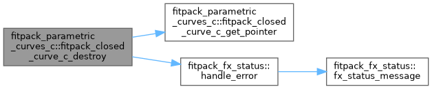
| subroutine, public fitpack_parametric_curves_c::fitpack_closed_curve_c_destroy_base | ( | type(fitpack_closed_curve_c), intent(inout) | this | ) |
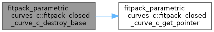
| subroutine, public fitpack_parametric_curves_c::fitpack_closed_curve_c_eval_many | ( | type(fitpack_closed_curve_c), intent(inout) | this, |
| integer(c_int32_t), intent(in), value | n, | ||
| real(c_double), dimension(n), intent(in) | u, | ||
| integer(c_int32_t), intent(out), optional | ierr, | ||
| real(c_double), dimension(*), intent(inout) | result, | ||
| integer(c_int32_t), intent(in), value | n_result ) |
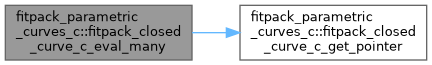
| subroutine, public fitpack_parametric_curves_c::fitpack_closed_curve_c_eval_one | ( | type(fitpack_closed_curve_c), intent(inout) | this, |
| real(c_double), intent(in), value | u, | ||
| integer(c_int32_t), intent(out), optional | ierr, | ||
| real(c_double), dimension(*), intent(inout) | result, | ||
| integer(c_int32_t), intent(in), value | n_result ) |
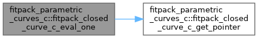
| integer(c_int32_t) function, public fitpack_parametric_curves_c::fitpack_closed_curve_c_fit | ( | type(fitpack_closed_curve_c), intent(in) | this, |
| real(c_double), intent(in), optional | smoothing, | ||
| integer(c_int32_t), intent(in), optional | order, | ||
| logical(c_bool), intent(in), optional | keep_knots ) |
|
private |
| integer(c_int32_t) function, public fitpack_parametric_curves_c::fitpack_closed_curve_c_interpolate | ( | type(fitpack_closed_curve_c), intent(in) | this, |
| integer(c_int32_t), intent(in), optional | order, | ||
| logical(c_bool), intent(in), optional | reset_knots ) |
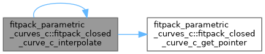
| logical(c_bool) function, public fitpack_parametric_curves_c::fitpack_closed_curve_c_is_same | ( | type(fitpack_closed_curve_c), intent(in) | this, |
| type(fitpack_closed_curve_c), intent(in) | that ) |
Pointer-identity check: true iff both wrappers point to the same underlying Fortran object (and that object is allocated).
| integer(c_int32_t) function, public fitpack_parametric_curves_c::fitpack_closed_curve_c_least_squares | ( | type(fitpack_closed_curve_c), intent(in) | this, |
| real(c_double), intent(in), optional | smoothing, | ||
| logical(c_bool), intent(in), optional | reset_knots ) |
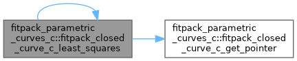
| subroutine, public fitpack_parametric_curves_c::fitpack_closed_curve_c_move_alloc | ( | type(fitpack_closed_curve_c), intent(inout) | to, |
| type(fitpack_closed_curve_c), intent(inout) | from, | ||
| type(fx_status), intent(out), optional | status ) |
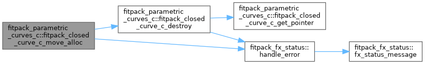
| real(c_double) function, public fitpack_parametric_curves_c::fitpack_closed_curve_c_mse | ( | type(fitpack_closed_curve_c), intent(in) | this | ) |
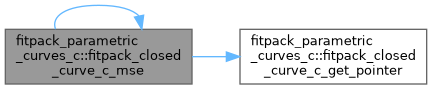
| integer(c_int32_t) function, public fitpack_parametric_curves_c::fitpack_closed_curve_c_new_fit | ( | type(fitpack_closed_curve_c), intent(in) | this, |
| integer(c_int32_t), intent(in), value | x_n1, | ||
| integer(c_int32_t), intent(in), value | x_n2, | ||
| real(c_double), dimension(x_n1, x_n2), intent(in) | x, | ||
| real(c_double), dimension(x_n2), intent(in), optional | u, | ||
| real(c_double), dimension(x_n2), intent(in), optional | w, | ||
| real(c_double), intent(in), optional | smoothing, | ||
| integer(c_int32_t), intent(in), optional | order ) |
| subroutine, public fitpack_parametric_curves_c::fitpack_closed_curve_c_new_points | ( | type(fitpack_closed_curve_c), intent(inout) | this, |
| integer(c_int32_t), intent(in), value | x_n1, | ||
| integer(c_int32_t), intent(in), value | x_n2, | ||
| real(c_double), dimension(x_n1, x_n2), intent(in) | x, | ||
| real(c_double), dimension(x_n2), intent(in), optional | u, | ||
| real(c_double), dimension(x_n2), intent(in), optional | w ) |
|
private |
| subroutine, public fitpack_parametric_curves_c::fitpack_closed_curve_c_set_default_parameters | ( | type(fitpack_closed_curve_c), intent(inout) | this | ) |
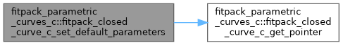
| subroutine, public fitpack_parametric_curves_c::fitpack_constrained_curve_c_allocate | ( | type(fitpack_constrained_curve_c), intent(inout) | this, |
| type(fx_status), intent(out), optional | status ) |
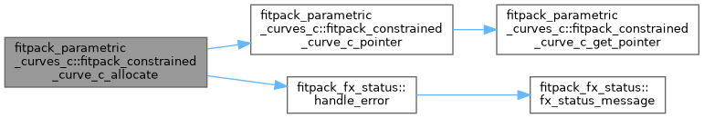
| subroutine, public fitpack_parametric_curves_c::fitpack_constrained_curve_c_associate | ( | type(fitpack_constrained_curve_c), intent(inout) | this, |
| type(fitpack_constrained_curve_c), intent(in) | that, | ||
| type(fx_status), intent(out), optional | status ) |
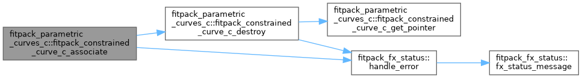
| subroutine, public fitpack_parametric_curves_c::fitpack_constrained_curve_c_clean_constraints | ( | type(fitpack_constrained_curve_c), intent(inout) | this | ) |
| subroutine, public fitpack_parametric_curves_c::fitpack_constrained_curve_c_comm_expand | ( | type(fitpack_constrained_curve_c), intent(inout) | this, |
| integer(c_int32_t), intent(in), value | n, | ||
| real(c_double), dimension(n), intent(in) | buffer ) |
| subroutine, public fitpack_parametric_curves_c::fitpack_constrained_curve_c_comm_pack | ( | type(fitpack_constrained_curve_c), intent(inout) | this, |
| integer(c_int32_t), intent(in), value | n, | ||
| real(c_double), dimension(n), intent(inout) | buffer ) |
| integer(c_int32_t) function, public fitpack_parametric_curves_c::fitpack_constrained_curve_c_comm_size | ( | type(fitpack_constrained_curve_c), intent(in) | this | ) |
| subroutine, public fitpack_parametric_curves_c::fitpack_constrained_curve_c_copy | ( | type(fitpack_constrained_curve_c), intent(inout) | this, |
| type(fitpack_constrained_curve_c), intent(in) | that, | ||
| logical(c_bool), intent(in), value | deep_copy, | ||
| type(fx_status), intent(out), optional | status ) |
| subroutine, public fitpack_parametric_curves_c::fitpack_constrained_curve_c_core_comm_expand | ( | type(fitpack_constrained_curve_c), intent(inout) | this, |
| integer(c_int32_t), intent(in), value | n, | ||
| real(c_double), dimension(n), intent(in) | buffer ) |
| subroutine, public fitpack_parametric_curves_c::fitpack_constrained_curve_c_core_comm_pack | ( | type(fitpack_constrained_curve_c), intent(inout) | this, |
| integer(c_int32_t), intent(in), value | n, | ||
| real(c_double), dimension(n), intent(inout) | buffer ) |
| integer(c_int32_t) function, public fitpack_parametric_curves_c::fitpack_constrained_curve_c_core_comm_size | ( | type(fitpack_constrained_curve_c), intent(in) | this | ) |
| subroutine, public fitpack_parametric_curves_c::fitpack_constrained_curve_c_curve_all_derivatives | ( | type(fitpack_constrained_curve_c), intent(inout) | this, |
| real(c_double), intent(in), value | u, | ||
| integer(c_int32_t), intent(out), optional | ierr, | ||
| real(c_double), dimension(*), intent(inout) | result, | ||
| integer(c_int32_t), intent(in), value | n_result ) |
| subroutine, public fitpack_parametric_curves_c::fitpack_constrained_curve_c_curve_derivative | ( | type(fitpack_constrained_curve_c), intent(inout) | this, |
| real(c_double), intent(in), value | u, | ||
| integer(c_int32_t), intent(in), value | order, | ||
| integer(c_int32_t), intent(out), optional | ierr, | ||
| real(c_double), dimension(*), intent(inout) | result, | ||
| integer(c_int32_t), intent(in), value | n_result ) |
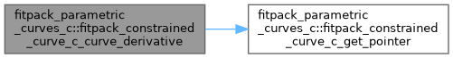
| subroutine, public fitpack_parametric_curves_c::fitpack_constrained_curve_c_curve_derivatives | ( | type(fitpack_constrained_curve_c), intent(inout) | this, |
| integer(c_int32_t), intent(in), value | n, | ||
| real(c_double), dimension(n), intent(in) | u, | ||
| integer(c_int32_t), intent(in), value | order, | ||
| integer(c_int32_t), intent(out), optional | ierr, | ||
| real(c_double), dimension(*), intent(inout) | result, | ||
| integer(c_int32_t), intent(in), value | n_result ) |
| subroutine, public fitpack_parametric_curves_c::fitpack_constrained_curve_c_destroy | ( | type(fitpack_constrained_curve_c), intent(inout) | this, |
| type(fx_status), intent(out), optional | status ) |
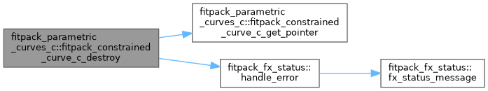
| subroutine, public fitpack_parametric_curves_c::fitpack_constrained_curve_c_destroy_base | ( | type(fitpack_constrained_curve_c), intent(inout) | this | ) |
| subroutine, public fitpack_parametric_curves_c::fitpack_constrained_curve_c_eval_many | ( | type(fitpack_constrained_curve_c), intent(inout) | this, |
| integer(c_int32_t), intent(in), value | n, | ||
| real(c_double), dimension(n), intent(in) | u, | ||
| integer(c_int32_t), intent(out), optional | ierr, | ||
| real(c_double), dimension(*), intent(inout) | result, | ||
| integer(c_int32_t), intent(in), value | n_result ) |
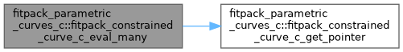
| subroutine, public fitpack_parametric_curves_c::fitpack_constrained_curve_c_eval_one | ( | type(fitpack_constrained_curve_c), intent(inout) | this, |
| real(c_double), intent(in), value | u, | ||
| integer(c_int32_t), intent(out), optional | ierr, | ||
| real(c_double), dimension(*), intent(inout) | result, | ||
| integer(c_int32_t), intent(in), value | n_result ) |
| integer(c_int32_t) function, public fitpack_parametric_curves_c::fitpack_constrained_curve_c_fit | ( | type(fitpack_constrained_curve_c), intent(in) | this, |
| real(c_double), intent(in), optional | smoothing, | ||
| integer(c_int32_t), intent(in), optional | order, | ||
| logical(c_bool), intent(in), optional | keep_knots ) |
|
private |
| subroutine, public fitpack_parametric_curves_c::fitpack_constrained_curve_c_getcomp_cp | ( | type(fitpack_constrained_curve_c), intent(in) | this, |
| type(c_ptr), intent(out) | ptr, | ||
| integer(c_int64_t), dimension(2), intent(out) | extents ) |
Raw view of component 'cp': address of the first element, plus the component's 2 extent(s). Null pointer and zero extents when the object or the component is unallocated; an allocated but zero-sized component still reports its true shape, but has no representable address. Symbol uses the getcomp_ infix (not get_) so it can never collide with a type-bound procedure named get_<component>.
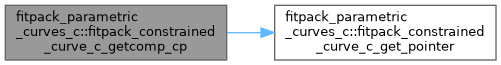
| subroutine, public fitpack_parametric_curves_c::fitpack_constrained_curve_c_getcomp_deriv_begin | ( | type(fitpack_constrained_curve_c), intent(in) | this, |
| type(c_ptr), intent(out) | ptr, | ||
| integer(c_int64_t), dimension(2), intent(out) | extents ) |
Raw view of component 'deriv_begin': address of the first element, plus the component's 2 extent(s). Null pointer and zero extents when the object or the component is unallocated; an allocated but zero-sized component still reports its true shape, but has no representable address. Symbol uses the getcomp_ infix (not get_) so it can never collide with a type-bound procedure named get_<component>.
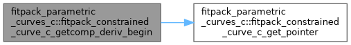
| subroutine, public fitpack_parametric_curves_c::fitpack_constrained_curve_c_getcomp_deriv_end | ( | type(fitpack_constrained_curve_c), intent(in) | this, |
| type(c_ptr), intent(out) | ptr, | ||
| integer(c_int64_t), dimension(2), intent(out) | extents ) |
Raw view of component 'deriv_end': address of the first element, plus the component's 2 extent(s). Null pointer and zero extents when the object or the component is unallocated; an allocated but zero-sized component still reports its true shape, but has no representable address. Symbol uses the getcomp_ infix (not get_) so it can never collide with a type-bound procedure named get_<component>.
| subroutine, public fitpack_parametric_curves_c::fitpack_constrained_curve_c_getcomp_xx | ( | type(fitpack_constrained_curve_c), intent(in) | this, |
| type(c_ptr), intent(out) | ptr, | ||
| integer(c_int64_t), dimension(2), intent(out) | extents ) |
Raw view of component 'xx': address of the first element, plus the component's 2 extent(s). Null pointer and zero extents when the object or the component is unallocated; an allocated but zero-sized component still reports its true shape, but has no representable address. Symbol uses the getcomp_ infix (not get_) so it can never collide with a type-bound procedure named get_<component>.
| integer(c_int32_t) function, public fitpack_parametric_curves_c::fitpack_constrained_curve_c_interpolate | ( | type(fitpack_constrained_curve_c), intent(in) | this, |
| integer(c_int32_t), intent(in), optional | order, | ||
| logical(c_bool), intent(in), optional | reset_knots ) |
| logical(c_bool) function, public fitpack_parametric_curves_c::fitpack_constrained_curve_c_is_same | ( | type(fitpack_constrained_curve_c), intent(in) | this, |
| type(fitpack_constrained_curve_c), intent(in) | that ) |
Pointer-identity check: true iff both wrappers point to the same underlying Fortran object (and that object is allocated).
| integer(c_int32_t) function, public fitpack_parametric_curves_c::fitpack_constrained_curve_c_least_squares | ( | type(fitpack_constrained_curve_c), intent(in) | this, |
| real(c_double), intent(in), optional | smoothing, | ||
| logical(c_bool), intent(in), optional | reset_knots ) |
| subroutine, public fitpack_parametric_curves_c::fitpack_constrained_curve_c_move_alloc | ( | type(fitpack_constrained_curve_c), intent(inout) | to, |
| type(fitpack_constrained_curve_c), intent(inout) | from, | ||
| type(fx_status), intent(out), optional | status ) |
| real(c_double) function, public fitpack_parametric_curves_c::fitpack_constrained_curve_c_mse | ( | type(fitpack_constrained_curve_c), intent(in) | this | ) |
| integer(c_int32_t) function, public fitpack_parametric_curves_c::fitpack_constrained_curve_c_new_fit | ( | type(fitpack_constrained_curve_c), intent(in) | this, |
| integer(c_int32_t), intent(in), value | x_n1, | ||
| integer(c_int32_t), intent(in), value | x_n2, | ||
| real(c_double), dimension(x_n1, x_n2), intent(in) | x, | ||
| real(c_double), dimension(x_n2), intent(in), optional | u, | ||
| real(c_double), dimension(x_n2), intent(in), optional | w, | ||
| real(c_double), intent(in), optional | smoothing, | ||
| integer(c_int32_t), intent(in), optional | order ) |
| subroutine, public fitpack_parametric_curves_c::fitpack_constrained_curve_c_new_points | ( | type(fitpack_constrained_curve_c), intent(inout) | this, |
| integer(c_int32_t), intent(in), value | x_n1, | ||
| integer(c_int32_t), intent(in), value | x_n2, | ||
| real(c_double), dimension(x_n1, x_n2), intent(in) | x, | ||
| real(c_double), dimension(x_n2), intent(in), optional | u, | ||
| real(c_double), dimension(x_n2), intent(in), optional | w ) |
|
private |
| type(c_ptr) function, public fitpack_parametric_curves_c::fitpack_constrained_curve_c_ref_ib | ( | type(fitpack_constrained_curve_c), intent(in) | this | ) |
Get pointer to scalar property 'ib'.
| type(c_ptr) function, public fitpack_parametric_curves_c::fitpack_constrained_curve_c_ref_ie | ( | type(fitpack_constrained_curve_c), intent(in) | this | ) |
Get pointer to scalar property 'ie'.
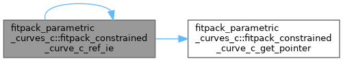
| subroutine, public fitpack_parametric_curves_c::fitpack_constrained_curve_c_set_constraints | ( | type(fitpack_constrained_curve_c), intent(inout) | this, |
| integer(c_int32_t), intent(in), value | ddx_begin_n1, | ||
| integer(c_int32_t), intent(in), value | ddx_begin_n2, | ||
| real(c_double), dimension(ddx_begin_n1, ddx_begin_n2), intent(in), optional | ddx_begin, | ||
| integer(c_int32_t), intent(in), value | ddx_end_n1, | ||
| integer(c_int32_t), intent(in), value | ddx_end_n2, | ||
| real(c_double), dimension(ddx_end_n1, ddx_end_n2), intent(in), optional | ddx_end, | ||
| integer(c_int32_t), intent(out), optional | ierr ) |
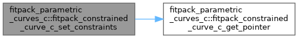
| subroutine, public fitpack_parametric_curves_c::fitpack_constrained_curve_c_set_default_parameters | ( | type(fitpack_constrained_curve_c), intent(inout) | this | ) |
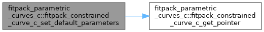
| subroutine, public fitpack_parametric_curves_c::fitpack_parametric_curve_c_allocate | ( | type(fitpack_parametric_curve_c), intent(inout) | this, |
| type(fx_status), intent(out), optional | status ) |
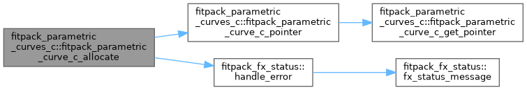
| subroutine, public fitpack_parametric_curves_c::fitpack_parametric_curve_c_associate | ( | type(fitpack_parametric_curve_c), intent(inout) | this, |
| type(fitpack_parametric_curve_c), intent(in) | that, | ||
| type(fx_status), intent(out), optional | status ) |
| subroutine, public fitpack_parametric_curves_c::fitpack_parametric_curve_c_comm_expand | ( | type(fitpack_parametric_curve_c), intent(inout) | this, |
| integer(c_int32_t), intent(in), value | n, | ||
| real(c_double), dimension(n), intent(in) | buffer ) |
| subroutine, public fitpack_parametric_curves_c::fitpack_parametric_curve_c_comm_pack | ( | type(fitpack_parametric_curve_c), intent(inout) | this, |
| integer(c_int32_t), intent(in), value | n, | ||
| real(c_double), dimension(n), intent(inout) | buffer ) |
| integer(c_int32_t) function, public fitpack_parametric_curves_c::fitpack_parametric_curve_c_comm_size | ( | type(fitpack_parametric_curve_c), intent(in) | this | ) |
| subroutine, public fitpack_parametric_curves_c::fitpack_parametric_curve_c_copy | ( | type(fitpack_parametric_curve_c), intent(inout) | this, |
| type(fitpack_parametric_curve_c), intent(in) | that, | ||
| logical(c_bool), intent(in), value | deep_copy, | ||
| type(fx_status), intent(out), optional | status ) |
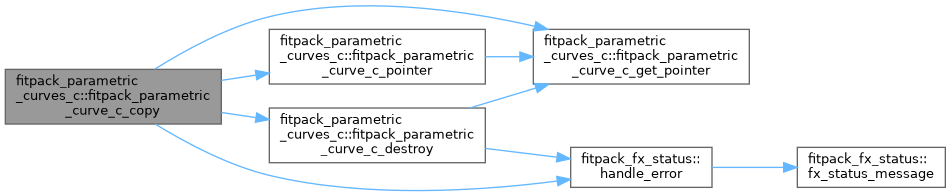
| subroutine, public fitpack_parametric_curves_c::fitpack_parametric_curve_c_core_comm_expand | ( | type(fitpack_parametric_curve_c), intent(inout) | this, |
| integer(c_int32_t), intent(in), value | n, | ||
| real(c_double), dimension(n), intent(in) | buffer ) |
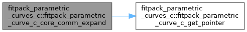
| subroutine, public fitpack_parametric_curves_c::fitpack_parametric_curve_c_core_comm_pack | ( | type(fitpack_parametric_curve_c), intent(inout) | this, |
| integer(c_int32_t), intent(in), value | n, | ||
| real(c_double), dimension(n), intent(inout) | buffer ) |
| integer(c_int32_t) function, public fitpack_parametric_curves_c::fitpack_parametric_curve_c_core_comm_size | ( | type(fitpack_parametric_curve_c), intent(in) | this | ) |
| subroutine, public fitpack_parametric_curves_c::fitpack_parametric_curve_c_curve_all_derivatives | ( | type(fitpack_parametric_curve_c), intent(inout) | this, |
| real(c_double), intent(in), value | u, | ||
| integer(c_int32_t), intent(out), optional | ierr, | ||
| real(c_double), dimension(*), intent(inout) | result, | ||
| integer(c_int32_t), intent(in), value | n_result ) |
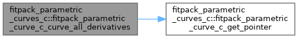
| subroutine, public fitpack_parametric_curves_c::fitpack_parametric_curve_c_curve_derivative | ( | type(fitpack_parametric_curve_c), intent(inout) | this, |
| real(c_double), intent(in), value | u, | ||
| integer(c_int32_t), intent(in), value | order, | ||
| integer(c_int32_t), intent(out), optional | ierr, | ||
| real(c_double), dimension(*), intent(inout) | result, | ||
| integer(c_int32_t), intent(in), value | n_result ) |
| subroutine, public fitpack_parametric_curves_c::fitpack_parametric_curve_c_curve_derivatives | ( | type(fitpack_parametric_curve_c), intent(inout) | this, |
| integer(c_int32_t), intent(in), value | n, | ||
| real(c_double), dimension(n), intent(in) | u, | ||
| integer(c_int32_t), intent(in), value | order, | ||
| integer(c_int32_t), intent(out), optional | ierr, | ||
| real(c_double), dimension(*), intent(inout) | result, | ||
| integer(c_int32_t), intent(in), value | n_result ) |
| subroutine, public fitpack_parametric_curves_c::fitpack_parametric_curve_c_destroy | ( | type(fitpack_parametric_curve_c), intent(inout) | this, |
| type(fx_status), intent(out), optional | status ) |
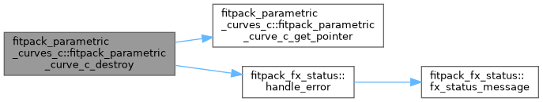
| subroutine, public fitpack_parametric_curves_c::fitpack_parametric_curve_c_destroy_base | ( | type(fitpack_parametric_curve_c), intent(inout) | this | ) |
| subroutine, public fitpack_parametric_curves_c::fitpack_parametric_curve_c_eval_many | ( | type(fitpack_parametric_curve_c), intent(inout) | this, |
| integer(c_int32_t), intent(in), value | n, | ||
| real(c_double), dimension(n), intent(in) | u, | ||
| integer(c_int32_t), intent(out), optional | ierr, | ||
| real(c_double), dimension(*), intent(inout) | result, | ||
| integer(c_int32_t), intent(in), value | n_result ) |
| subroutine, public fitpack_parametric_curves_c::fitpack_parametric_curve_c_eval_one | ( | type(fitpack_parametric_curve_c), intent(inout) | this, |
| real(c_double), intent(in), value | u, | ||
| integer(c_int32_t), intent(out), optional | ierr, | ||
| real(c_double), dimension(*), intent(inout) | result, | ||
| integer(c_int32_t), intent(in), value | n_result ) |
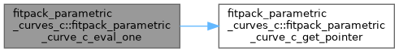
| integer(c_int32_t) function, public fitpack_parametric_curves_c::fitpack_parametric_curve_c_fit | ( | type(fitpack_parametric_curve_c), intent(in) | this, |
| real(c_double), intent(in), optional | smoothing, | ||
| integer(c_int32_t), intent(in), optional | order, | ||
| logical(c_bool), intent(in), optional | keep_knots ) |
| logical(c_bool) function, public fitpack_parametric_curves_c::fitpack_parametric_curve_c_get_has_params | ( | type(fitpack_parametric_curve_c), intent(in) | this | ) |
Get logical property 'has_params'.
|
private |
| subroutine, public fitpack_parametric_curves_c::fitpack_parametric_curve_c_getcomp_dd | ( | type(fitpack_parametric_curve_c), intent(in) | this, |
| type(c_ptr), intent(out) | ptr, | ||
| integer(c_int64_t), dimension(2), intent(out) | extents ) |
Raw view of component 'dd': address of the first element, plus the component's 2 extent(s). Null pointer and zero extents when the object or the component is unallocated; an allocated but zero-sized component still reports its true shape, but has no representable address. Symbol uses the getcomp_ infix (not get_) so it can never collide with a type-bound procedure named get_<component>.
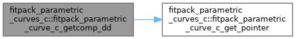
| subroutine, public fitpack_parametric_curves_c::fitpack_parametric_curve_c_getcomp_sp | ( | type(fitpack_parametric_curve_c), intent(in) | this, |
| type(c_ptr), intent(out) | ptr, | ||
| integer(c_int64_t), dimension(1), intent(out) | extents ) |
Raw view of component 'sp': address of the first element, plus the component's 1 extent(s). Null pointer and zero extents when the object or the component is unallocated; an allocated but zero-sized component still reports its true shape, but has no representable address. Symbol uses the getcomp_ infix (not get_) so it can never collide with a type-bound procedure named get_<component>.
| subroutine, public fitpack_parametric_curves_c::fitpack_parametric_curve_c_getcomp_t | ( | type(fitpack_parametric_curve_c), intent(in) | this, |
| type(c_ptr), intent(out) | ptr, | ||
| integer(c_int64_t), dimension(1), intent(out) | extents ) |
Raw view of component 't': address of the first element, plus the component's 1 extent(s). Null pointer and zero extents when the object or the component is unallocated; an allocated but zero-sized component still reports its true shape, but has no representable address. Symbol uses the getcomp_ infix (not get_) so it can never collide with a type-bound procedure named get_<component>.
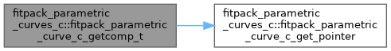
| subroutine, public fitpack_parametric_curves_c::fitpack_parametric_curve_c_getcomp_u | ( | type(fitpack_parametric_curve_c), intent(in) | this, |
| type(c_ptr), intent(out) | ptr, | ||
| integer(c_int64_t), dimension(1), intent(out) | extents ) |
Raw view of component 'u': address of the first element, plus the component's 1 extent(s). Null pointer and zero extents when the object or the component is unallocated; an allocated but zero-sized component still reports its true shape, but has no representable address. Symbol uses the getcomp_ infix (not get_) so it can never collide with a type-bound procedure named get_<component>.
| subroutine, public fitpack_parametric_curves_c::fitpack_parametric_curve_c_getcomp_w | ( | type(fitpack_parametric_curve_c), intent(in) | this, |
| type(c_ptr), intent(out) | ptr, | ||
| integer(c_int64_t), dimension(1), intent(out) | extents ) |
Raw view of component 'w': address of the first element, plus the component's 1 extent(s). Null pointer and zero extents when the object or the component is unallocated; an allocated but zero-sized component still reports its true shape, but has no representable address. Symbol uses the getcomp_ infix (not get_) so it can never collide with a type-bound procedure named get_<component>.
| subroutine, public fitpack_parametric_curves_c::fitpack_parametric_curve_c_getcomp_x | ( | type(fitpack_parametric_curve_c), intent(in) | this, |
| type(c_ptr), intent(out) | ptr, | ||
| integer(c_int64_t), dimension(2), intent(out) | extents ) |
Raw view of component 'x': address of the first element, plus the component's 2 extent(s). Null pointer and zero extents when the object or the component is unallocated; an allocated but zero-sized component still reports its true shape, but has no representable address. Symbol uses the getcomp_ infix (not get_) so it can never collide with a type-bound procedure named get_<component>.
| integer(c_int32_t) function, public fitpack_parametric_curves_c::fitpack_parametric_curve_c_interpolate | ( | type(fitpack_parametric_curve_c), intent(in) | this, |
| integer(c_int32_t), intent(in), optional | order, | ||
| logical(c_bool), intent(in), optional | reset_knots ) |
| logical(c_bool) function, public fitpack_parametric_curves_c::fitpack_parametric_curve_c_is_same | ( | type(fitpack_parametric_curve_c), intent(in) | this, |
| type(fitpack_parametric_curve_c), intent(in) | that ) |
Pointer-identity check: true iff both wrappers point to the same underlying Fortran object (and that object is allocated).
| integer(c_int32_t) function, public fitpack_parametric_curves_c::fitpack_parametric_curve_c_least_squares | ( | type(fitpack_parametric_curve_c), intent(in) | this, |
| real(c_double), intent(in), optional | smoothing, | ||
| logical(c_bool), intent(in), optional | reset_knots ) |
| subroutine, public fitpack_parametric_curves_c::fitpack_parametric_curve_c_move_alloc | ( | type(fitpack_parametric_curve_c), intent(inout) | to, |
| type(fitpack_parametric_curve_c), intent(inout) | from, | ||
| type(fx_status), intent(out), optional | status ) |
| real(c_double) function, public fitpack_parametric_curves_c::fitpack_parametric_curve_c_mse | ( | type(fitpack_parametric_curve_c), intent(in) | this | ) |
| integer(c_int32_t) function, public fitpack_parametric_curves_c::fitpack_parametric_curve_c_new_fit | ( | type(fitpack_parametric_curve_c), intent(in) | this, |
| integer(c_int32_t), intent(in), value | x_n1, | ||
| integer(c_int32_t), intent(in), value | x_n2, | ||
| real(c_double), dimension(x_n1, x_n2), intent(in) | x, | ||
| real(c_double), dimension(x_n2), intent(in), optional | u, | ||
| real(c_double), dimension(x_n2), intent(in), optional | w, | ||
| real(c_double), intent(in), optional | smoothing, | ||
| integer(c_int32_t), intent(in), optional | order ) |
| subroutine, public fitpack_parametric_curves_c::fitpack_parametric_curve_c_new_points | ( | type(fitpack_parametric_curve_c), intent(inout) | this, |
| integer(c_int32_t), intent(in), value | x_n1, | ||
| integer(c_int32_t), intent(in), value | x_n2, | ||
| real(c_double), dimension(x_n1, x_n2), intent(in) | x, | ||
| real(c_double), dimension(x_n2), intent(in), optional | u, | ||
| real(c_double), dimension(x_n2), intent(in), optional | w ) |
|
private |
| type(c_ptr) function, public fitpack_parametric_curves_c::fitpack_parametric_curve_c_ref_idim | ( | type(fitpack_parametric_curve_c), intent(in) | this | ) |
Get pointer to scalar property 'idim'.
| type(c_ptr) function, public fitpack_parametric_curves_c::fitpack_parametric_curve_c_ref_knots | ( | type(fitpack_parametric_curve_c), intent(in) | this | ) |
Get pointer to scalar property 'knots'.
| type(c_ptr) function, public fitpack_parametric_curves_c::fitpack_parametric_curve_c_ref_m | ( | type(fitpack_parametric_curve_c), intent(in) | this | ) |
Get pointer to scalar property 'm'.
| type(c_ptr) function, public fitpack_parametric_curves_c::fitpack_parametric_curve_c_ref_nest | ( | type(fitpack_parametric_curve_c), intent(in) | this | ) |
Get pointer to scalar property 'nest'.
| type(c_ptr) function, public fitpack_parametric_curves_c::fitpack_parametric_curve_c_ref_order | ( | type(fitpack_parametric_curve_c), intent(in) | this | ) |
Get pointer to scalar property 'order'.
| type(c_ptr) function, public fitpack_parametric_curves_c::fitpack_parametric_curve_c_ref_ubegin | ( | type(fitpack_parametric_curve_c), intent(in) | this | ) |
Get pointer to scalar property 'ubegin'.
| type(c_ptr) function, public fitpack_parametric_curves_c::fitpack_parametric_curve_c_ref_uend | ( | type(fitpack_parametric_curve_c), intent(in) | this | ) |
Get pointer to scalar property 'uend'.
| subroutine, public fitpack_parametric_curves_c::fitpack_parametric_curve_c_set_default_parameters | ( | type(fitpack_parametric_curve_c), intent(inout) | this | ) |
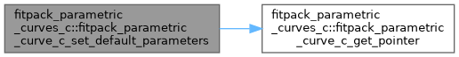
| subroutine, public fitpack_parametric_curves_c::fitpack_parametric_curve_c_set_has_params | ( | type(fitpack_parametric_curve_c), intent(inout) | this, |
| logical(c_bool), intent(in), value | value ) |
Set logical property 'has_params'.